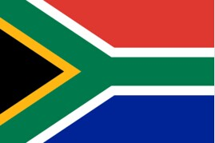
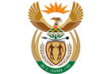
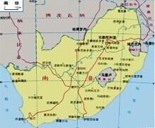

- 南非国旗
- 南非国徽
- 南非标志性建筑
- 南非地理位置
南非概况
南非地处南半球，有“彩虹之国”之美誉，位于非洲大陆的最南端，陆地面积为1219,090平方公里，南非是非洲第一大经济体，国民拥有很高的生活水平，南非的经济相比其他非洲国家是相对稳定的。
人口概况
5177万（南非第三次人口普查报告,南国家统计局2012年10月公布）。分黑人、有色人、白人和亚裔四大种族，分别占总人口的79.6%、9%、8.9%和2.5%。黑人主要有祖鲁、科萨、斯威士、茨瓦纳、北索托、南索托、聪加、文达、恩德贝莱9个部族，主要使用班图语。白人主要是荷兰血统的阿非利卡人（曾自称布尔人,约占57%）和英国血统的白人（约占39%），有色人是殖民时期白人、土著人和奴隶的混血人后裔，主要使用阿非利卡语。亚裔人主要是印度人和华人。白人、大多数有色人和60%的黑人信奉基督教新教或天主教；亚裔人约60%信奉印度教，20%信奉伊斯兰教；部分黑人信奉原始宗教。
南非经济
南非属于中等收入的发展中国家, 也是非洲经济最发达的国家(据中国外交部网站)。自然资源十分丰富。金融、法律体系比较完善, 通讯、交通、能源等基础设施良好。矿业、制造业、农业和服务业是经济四大支柱, 深井采矿等技术居于世界领先地位。但国民经济各部门、地区发展不平衡, 城乡、黑白二元经济特征明显。上世纪80年代初至90年代初受国际制裁影响, 经济出现衰退。新南非政府制定了“重建与发展计划”, 强调提高黑人社会、经济地位。1996年推出 “增长、就业和再分配计划”, 旨在通过推进私有化, 削减财政赤字, 增加劳动力市场灵活性, 促进出口, 放松外汇管制, 鼓励中小企业发展等措施实现经济增长, 增加就业, 逐步改变分配不合理的情况。
外交关系
奉行独立自主的全方位外交政策, 主张在尊重主权、平等互利和互不干涉内政的基础上同一切国家保持和发展双边友好关系。对外交往活跃, 国际地位不断提高。其外交政策六大支柱是:保证人权；在全世界促进自由、民主；尊重公正原则及国际法；维护世界和平, 参加解决冲突的国际机制；在国际舞台上维护非洲利益, 促进相互依赖的世界。
经贸往来
南非实行自由贸易制度, 是世界贸易组织(WTO)的创始会员国。欧盟与美国等是南非传统的贸易伙伴, 但近年与亚洲、中东等地区的贸易也在不断增长。
中国是南非最大贸易伙伴，南非是中国在非洲最大贸易伙伴。2011年双边贸易额599亿美元，同比增长31.8%，其中中方出口153亿美元，进口446亿美元。中国对南非主要出口电器和电子产品、纺织产品和金属制品等，从南非主要进口矿产品。2004年6月，南非承认中国的市场经济地位。
两国双向投资规模不断扩大。截至2012年底，我国在南非直接投资42.3亿美元，南非在华实际投资6.4亿美元。